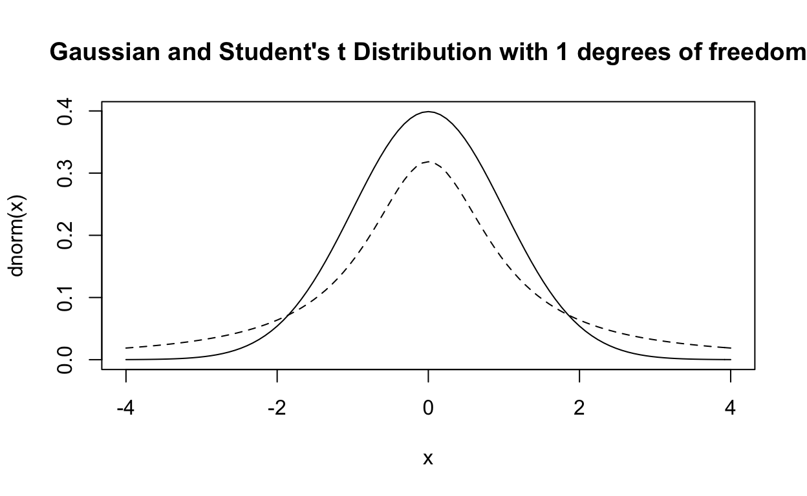

In Chapters 7 and 8, we looked at methods for estimating intervals and testing hypotheses based on the sampling distribution for estimates based on large samples. The definition of large is somewhat subjective, but the general assumption is that \(n\geq 30\) is large enough in most cases to assume that the sampling distribution of \(\bar{x}\sim N(\mu,\sigma^2/n)\), even when we had to substitute the estimate \(s^2\) for \(\sigma^2\).
The assumption of Gaussian behaviour poses two problems, first often collecting \(30\) or more samples in impractical, and second, the assumption of the Gaussian sampling distribution doesn’t take into account the extra variability due to the estimation of \(\sigma^2\). In short, when \(n\) is small, then the Gaussian assumption can fail as \[ \frac{\sqrt{n}(\bar{x}-\mu)}{s}\neq \frac{\sqrt{n}(\bar{x}-\mu)}{\sigma}. \] Instead, we need a new probability distribution that takes into account the extra variability caused by using the estimate \(s\) instead of \(\sigma\). When \(n\) is small (\(<30\)), then it can be shown that \[ \frac{\sqrt{n}(\bar{x}-\mu)}{s}\stackrel{d}{\rightarrow} t_{\nu} \] where the degrees of freedom \(\nu\) is equal to \(n-1\). Student’s \(t\) distribution is a symmetric distribution that is superficially similar to the Gaussian distribution but has heavier tails, and as \(\nu\) increases Student’s \(t\) distribution looks more and more Gaussian. Note that for \(X\sim t_{\nu}\) \[ E(X) = 0,\mbox{ and } Var(X)=\frac{\nu}{\nu-2},\:\nu>2 \] where the variance is greater than \(1\), thus the heavier tails compared with the standard Gaussian distribution \(N(0,1)\), but that as \(\nu\) (or \(n\)) increases then the variance approaches \(1\) implying that the two densities converge as \(n\) approaches infinity. The GIF below illustrates this behaviour, the solid line is a standard normal Gaussian distribution, and the broken line is Student’s \(t\) distribution. Notice that as \(\nu\) increases, the two distributions approach convergence.

Student’s \(t\) distribution is more reasonable (and conservative) to use when computing confidence intervals or performing hypothesis testing on small samples. To do this, we note that the sampling density of the quantity \[ t=\frac{\sqrt{n}(\bar{x}-\mu)}{s}\sim t_{\nu}. \] The rejection rules for evaluating hypotheses are the same for the \(t\) statistic as for the \(Z\) statistic. Given a Type I Error Rate of \(\alpha\) we identify a critical value of \(t\) \[ t_{\nu,\alpha} = \{t:Pr(t<t_{\nu,\alpha})=1-\alpha\} \] for a single-sided test and \[ t_{\nu,\alpha/2}=\{t:Pr(t<t_{\nu,\alpha/2})=1-\alpha/2\} \] for a two-sided test. Then our rejection rule becomes
| \(H_0\) | Reject if |
|---|---|
| \(\mu = \mu_0\) | \(t>|t_{\nu,\alpha/2}\) |
| \(\mu\geq \mu_0\) | \(t< -t_{\nu,\alpha}\) |
| \(\mu\leq \mu_0\) | \(t>t_{\nu,\alpha}\) |
Example
A new process for producing synthetic diamonds is only profitable if the average weight of the diamonds produced is greater than 0.5 carats. Six samples from the new process are created weighing: \((0.46,0.61,0.52,0.48,0.57, 0.54)\) carats. Set up a hypotheses test to determine whether or not the process is profitable. Assume a Type I error rate of \(\alpha = 0.05\).
Solution:
Since we want to determine if the process is profitable, we will set up our null hypothesis to assume that it is not: \[ H_0: \mu\leq 0.5\qquad\mbox{and}\qquad H_A: \mu>0.5 \] Compute the sample mean, sample standard deviation, and test statistic \(t\) \[ \begin{aligned} t &= \frac{\sqrt{n}(\bar{x}-\mu_0)}{s}\\ & = \frac{\sqrt{6}(0.53-0.50)}{0.056}\\ & = 1.32\\ &1.32<2.015\mbox{, fail to reject the null hypothesis.} \end{aligned} \]
mu0<-0.5
x<-c(0.46,0.61,0.52,0.48,0.57,0.54)
n<-length(x)
s <- sd(x)
xbar <- mean(x)
SE <-s/sqrt(n)
t<-(xbar-mu0)/SE
res<-ifelse(t>qt(0.95,n-1), "reject the null hypothesis.", "fail to reject the null Hypothesis" )The test statistic is 1.316 therefore we should fail to reject the null Hypothesis.
OR
We can use the t.test() in R:
x<-c(0.46,0.61,0.52,0.48,0.57,0.54)
t.test(x,alternative = "greater", mu = 0.5, conf.level = 0.95)%>%
pander()| Test statistic | df | P value | Alternative hypothesis | mean of x |
|---|---|---|---|---|
| 1.316 | 5 | 0.1227 | greater | 0.53 |
Example
House paint is sold in containers labelling the coverage and drying time for a single coat of paint. One manufacturer’s packaging claims that a four-litre can of paint covers 37 square metres. This claim is tested by drawing ten cans of paint at random and painting ten identical surfaces using the cans of paint and the same methods. The resulting coverage for each can of paint:| 28.9 | 38.3 | 41.5 | 28.2 | 33.9 |
| 28.9 | 34.2 | 34.9 | 38.1 | 32.5 |
Compute the \(95\%\) confidence interval for the mean coverage for a can of paint. Does this evidence support the manufacturer’s assertion that one can of paint will provide 37 m\(^2\) of coverage?
Solution:
We want to compute a 95% confidence interval of the form: \[ \begin{aligned} \bar{x}\pm t_{\nu,\alpha/2}\frac{s}{\sqrt{n}}&=\\ &=33.94\pm 2.26\frac{4.48}{\sqrt{10}}\\ &=(30.74, 37.14) \end{aligned} \]
x <- c(28.9, 28.9, 38.3, 34.2, 41.5, 34.9, 28.2, 38.1, 33.9, 32.5)
n <- length(x)
xbar<-mean(x)
s<-sd(x)
t.crit<-qt(0.975,n-1)
UCL <- xbar + t.crit * s / sqrt(n)
LCL <- xbar - t.crit * s / sqrt(n)The confidence interval is (30.738,37.142).
OR
x <- c(28.9, 28.9, 38.3, 34.2, 41.5, 34.9, 28.2, 38.1, 33.9, 32.5)
t.out <- t.test(x,alternative = "two.sided", mu = 37, conf.level = 0.95)
t.out$conf.int%>%
t()%>%
kable(digits = 3,col.names = c("Lower Conf. Int.", "Upper Conf. Int."),align = "c")%>%
column_spec(column = 1:2,width = "3.5cm")| Lower Conf. Int. | Upper Conf. Int. |
|---|---|
| 30.738 | 37.142 |
Since we are asked if the evidence supports the manufacturer’s assertion that a can of their paint will provide 37 m\(^2\) of coverage we set the hypotheses as: \[ H_0:\mu = 37\qquad\mbox{and}\qquad H_A:\mu\neq 37 \] and assume a Type I error rate of \(\alpha = 0.05\).
Given that the confidence interval contains the value 37, we fail to reject the null hypothesis. However, we can also perform the whole test pretty easily. \[ \begin{aligned} t &= \frac{\sqrt{n}(\bar{x}-\mu_0)}{s}\\ & = \frac{\sqrt{10}(33.94-37)}{4.48}\\ & = -2.16\\ &|-2.16|<2.26\mbox{, fail to reject the null hypothesis} \end{aligned} \]
x <- c(28.9, 28.9, 38.3, 34.2, 41.5, 34.9, 28.2, 38.1, 33.9, 32.5)
mu0<-37
n <- length(x)
xbar<-mean(x)
s<-sd(x)
SE<-s/sqrt(n)
t.crit<-qt(0.975,n-1)
t<-(xbar-mu0)/SE
res<-ifelse(abs(t)>t.crit, "reject the null hypothesis.", "fail to reject the null Hypothesis" )The test statistic is -2.162 therefore we should fail to reject the null Hypothesis.
OR
x <- c(28.9, 28.9, 38.3, 34.2, 41.5, 34.9, 28.2, 38.1, 33.9, 32.5)
t.test(x,alternative = "two.sided", mu = 37, conf.level = 0.95)%>%
pander()| Test statistic | df | P value | Alternative hypothesis | mean of x |
|---|---|---|---|---|
| -2.162 | 9 | 0.05887 | two.sided | 33.94 |
In many cases, the differences in population means are also of interest, and we have to make adjustments to the test procedure based on small sample sizes. Under the assumptions for the Gaussian distribution of sample statistics based on large samples, we could show that the statistic for testing the difference between population means \[ \frac{\bar{x}_1-\bar{x}_2}{\sqrt{\frac{\sigma^2_1}{n_1}+\frac{\sigma^2_2}{n_2}}}\approx \frac{\bar{x}_1-\bar{x}_2}{\sqrt{\frac{s^2_1}{n_1}+\frac{s^2_2}{n_2}}} \] follows a Gaussian distribution. Unfortunately, when the sample sizes are small, this property holds only when \(\sigma^2_1=\sigma_2^2\) or \[ \sqrt{\frac{\sigma_1^2}{n_1}+\frac{\sigma_2^2}{n_2}}=\sqrt{\sigma^2\left(\frac{1}{n_1}+\frac{1}{n_2}\right)}. \] This result means that by extension the two sample variances should be equal, yielding our test statistic \[ t=\frac{\bar{x}_1-\bar{x}_2}{\sqrt{s^2\left(\frac{1}{n_1}+\frac{1}{n_2}\right)}}. \] In this case, we can show that the resulting test statistic does follow Student’s \(t\) distribution. In most cases, the two-sample variances are not equal, and we want to use both of them to estimate the common or variance \(s_p^2\), the weighted average \[ s^2_{p}=\frac{(n_1-1)s_1^2+(n_2-1)s_2^2}{n_1+n_2-2} \] resulting in the test statistic \[ t=\frac{\bar{x}_1-\bar{x}_2}{\sqrt{s_{p}^2\left(\frac{1}{n_1}+\frac{1}{n_2}\right)}}. \]
Example
A unit can be taken either attending lecture in-person or by participating in on-line sessions. To test the difference between academic outcomes for students attending on-line lectures versus in-person lectures, students in each group take the same exam. Scores out of 45 are recorded for \(n_1=n_2=9\) students.
| Online | In-person |
|---|---|
| 32 | 35 |
| 37 | 31 |
| 35 | 29 |
| 28 | 25 |
| 41 | 34 |
| 44 | 40 |
| 35 | 27 |
| 31 | 32 |
| 34 | 31 |
Let \(\mu_1\) and \(\mu_2\) be the mean scores for the on-line group and the in-person group respectively, is there a difference between the average outcome for online versus in-person students?
Solution:
Because the question asks us about a difference, we construct our hypotheses as a two-sided test: \[ H_0: \mu_1=\mu_2\qquad\mbox{and}\qquad H_A:\mu_1\neq\mu_2 \] \[ H_0: \mu_1-\mu_2=0\qquad\mbox{and}\qquad H_A:\mu_1-\mu_2\neq 0. \] Note that this is a generalisation of the hypotheses: \[ H_0: \mu_1-\mu_2=\Delta_0\qquad\mbox{and}\qquad H_A:\mu_1-\mu_2\neq \Delta_0 \] with \(\Delta_0\). \[ t = \frac{\bar{x}_1-\bar{x}_2}{\sqrt{s_{p}^2\left(\frac{1}{n_1}+\frac{1}{n_2}\right)}} \] where \[ \begin{aligned} s_p^2 & = \frac{(n_1-1)s_1^2+(n_2-1)s_2^2}{n_1+n_2-2}\\ & = \frac{(9-1)24.44 + (9-1)20.03}{9+9-2}\\ & = 22.24 \end{aligned} \] \[ \begin{aligned} t &= \frac{\bar{x}_1-\bar{x}_2}{\sqrt{s_{p}^2\left(\frac{1}{n_1}+\frac{1}{n_2}\right)}}\\ & = \frac{35.22-31.56}{22.24\left(\frac{1}{9}+\frac{1}{9}\right)}\\ & = 1.65\\ & |1.65|<2.12\mbox{, fail to reject the null hypothesis.} \end{aligned} \]
x1 <- c(32,37,35,28,41,44,35,31,34)
x2 <- c(35,31,29,25,34,40,27,32,31)
Delta0<-0
n1 <- length(x1)
n2 <- length(x2)
xbar1 <- mean(x1)
xbar2 <- mean(x2)
var1<-var(x1)
var2<-var(x2)
sp<-((n1-1)*var1+(n2-1)*var2)/(n1+n2-2)
SE<-sqrt(sp*(1/n1+1/n2))
t<-((xbar1-xbar2)-Delta0)/SE
t.crit<-qt(0.975,n1+n2-2)
res<-ifelse(abs(t)>t.crit, "reject the null hypothesis.", "fail to reject the null Hypothesis" )The test statistic is 1.649 therefore we should fail to reject the null Hypothesis.
OR
x1 <- c(32,37,35,28,41,44,35,31,34)
x2 <- c(35,31,29,25,34,40,27,32,31)
t.test(x1,x2,alternative = "two.sided", mu = 0, conf.level = 0.95)%>%
pander()| Test statistic | df | P value | Alternative hypothesis | mean of x | mean of y |
|---|---|---|---|---|---|
| 1.649 | 15.84 | 0.1187 | two.sided | 35.22 | 31.56 |
Notice how since this is a two-sided test the order of \(\mu_1\) and \(\mu_2\) doesn’t matter. BUT this can be very important for one-sided tests.
Note that we use pooled variance predicated on the idea that the two population variances are equal (despite differences in the sample variances). If the population variances differ greatly, there is an alternative procedure for estimation and testing using an \(t\)-distribution. As a rule of thumb, we use this procedure when \[
\frac{\mbox{Large }s^2}{\mbox{Smaller }s^2}>3.
\] In this case, the use of the pooled variance is inappropriate, and each population variance is estimated by its sample variance, resulting in the familiar test statistic \[
t = \frac{(\bar{x}_1-\bar{x}_2)-\Delta_0}{\sqrt{\frac{s_1^2}{n_1}+\frac{s_2^2}{n_2}}}
\] (note that $_0 $ is typically \(0\)). This sample statistic is familiar but, when the sample sizes are small, the degree of freedom is adjusted to account for the unequal variances.
\[
\nu\approx\frac{\left(\frac{s_1^2}{n_1}+\frac{s_2^2}{n_2}\right)^2}{\frac{(s_1^2/n_1)^2}{n_1-1}+\frac{(s_2^2/n_2)^2}{n_2-1}}
\] because this is typically a non-integer number, the result is truncated (not rounded) and used as the degree of freedom \(\nu\) for finding the critical value of \(t\) for the hypothesis test or confidence interval.
Example
Data are collected to measure the impact strength of two different packaging materials
| Material 1 | Material 2 |
|---|---|
| 1.25 | 0.89 |
| 1.16 | 0.91 |
| 1.33 | 0.97 |
| 1.15 | 0.95 |
| 1.23 | 0.94 |
| 1.20 | 0.92 |
| 1.32 | 0.98 |
| 1.28 | 0.96 |
| 1.21 | 0.98 |
Is there a difference between the strengths of the two packing materials? Test this using the appropriate hypotheses at the Type I Error Rate of \(\alpha = 0.05\).
Solution
Again since the question asks us about a difference, the hypotheses are: \[ H_0: \mu_1=\mu_2\qquad\mbox{and}\qquad H_A:\mu_1\neq\mu_2 \] or \[ H_0: \mu_1-\mu_2=0\qquad\mbox{and}\qquad H_A:\mu_1-\mu_2\neq 0. \] But we do need to check the assumption of equal variances: \[ \begin{aligned} \frac{\max(s_1^2,s_2^2)}{\min(s_1^2,s_2^2)}& = \\ & = \frac{0.00415}{0.00103}\\ & = 4.038\mbox{, we cannot assume that variances are approximately equal.} \end{aligned} \]
x1 <- c(1.25,1.16,1.33,1.15,1.23,1.20,1.32,1.28,1.21)
x2 <- c(0.89,0.91,0.97,0.95,0.94,0.92,0.98,0.96,0.98)
var1 <- var(x1)
var2 <- var(x2)
res <- max(var1,var2)/min(var1,var2)
ans <- ifelse(res > 3, "conclude variances are unequal.", "conclude variances are approximately equal.")The ratio of sample variances is 4.038 therefore we should conclude variances are unequal.
The corrected degrees of freedom is \[ \begin{aligned} \nu & \approx\frac{\left(\frac{s_1^2}{n_1}+\frac{s_2^2}{n_2}\right)}{\frac{(s_1^2/n_1)^2}{n_1-1}+\frac{(s_2^2/n_2)^2}{n_2-1}}\\ & \approx \frac{\left(\frac{0.00415}{9}+\frac{0.00103}{9}\right)}{\frac{(0.00415/9)^2}{9-1}+\frac{(0.00103/9)^2}{9-1}}\\ & \approx 11.73\mbox{, set }\nu=11 \end{aligned} \] \[ \begin{aligned} t & = \frac{\bar{x}_1-\bar{x}_2}{\sqrt{\frac{s_1^2}{n_1}+\frac{s_2^2}{n_2}}}\\ & = \frac{1.24-0.94}{\sqrt{\frac{0.00415}{9}+\frac{0.00103}{9}}}\\ & = 12.18\\ & \phantom{=}|12.18|>2.201\mbox{, reject the null hypothesis.} \end{aligned} \]
x1 <- c(1.25,1.16,1.33,1.15,1.23,1.20,1.32,1.28,1.21)
x2 <- c(0.89,0.91,0.97,0.95,0.94,0.92,0.98,0.96,0.98)
n1 <- length(x1)
n2 <- length(x2)
xbar1 <- mean(x1)
xbar2 <- mean(x2)
var1 <- var(x1)
var2 <- var(x2)
num<-((var1+var2)/n1)^2
den<-((var1/n1)^2/(n1-1))+((var2/n2)^2/(n2-1))
df <- trunc(num/den)
t<-(xbar1-xbar2)/sqrt(var1/n1+var2/n2)
t.crit<-qt(0.975,df)
res<-ifelse(abs(t)>t.crit, "reject the null hypothesis.", "fail to reject the null hypothesis")The test statistic is 12.183 therefore we should reject the null hypothesis..
OR
x1 <- c(1.25,1.16,1.33,1.15,1.23,1.20,1.32,1.28,1.21)
x2 <- c(0.89,0.91,0.97,0.95,0.94,0.92,0.98,0.96,0.98)
t.test(x1,x2,alternative = "two.sided", mu = 0, var.equal = FALSE, conf.level = 0.95)%>%
pander()| Test statistic | df | P value | Alternative hypothesis | mean of x |
|---|---|---|---|---|
| 12.18 | 11.73 | 5.158e-08 * * * | two.sided | 1.237 |
| mean of y |
|---|
| 0.9444 |
Note that by setting the option var.equal = FALSE the test procedure uses the corrected value for \(\nu\) automatically.
The two-sample \(t\)-test is appropriate when samples are , but in many cases, we want to compare two samples. This case arises when the two samples are paired or matched. Examples of this include measuring subjects before and after treatments or measuring two quantities from the same subject. In this case, if we want to test the differences we have to use a different method, we take the difference in the observations and then design hypotheses based on this “single” sample. To illustrate the difference in these approaches, consider the following example.
Example
We test the difference between two types of tyre (Type A and Type B) by selecting one tyre of each type at random and then fitting them to the rear wheels of one of five cars. Each car is driven for a specified number of kilometres, and the observed wear is measured.
| Tyre A | Tyre B |
|---|---|
| 10.6 | 10.2 |
| 9.8 | 9.4 |
| 12.3 | 11.8 |
| 9.7 | 9.1 |
| 8.8 | 8.3 |
If we treat these samples as independent and perform a two-sample \(t\) test of the hypotheses \[ H_0: \mu_1-\mu_2 = 0\qquad\mbox{and}\qquad H_A:\mu_1-\mu_2\neq 0 \] the resulting test statistic is \[ t = \frac{(\bar{x}_1-\bar{x}_2)-0}{\sqrt{s^2_p\left(\frac{1}{n_1}+\frac{1}{n_2}\right)}} \] where \[ s_p^2=\frac{(4)(1.316)^2+(4)(1.328)^2}{8}=1.748 \] \[ t = \frac{(10.24-9.76)}{\sqrt{1.748\left(\frac{1}{5}+\frac{1}{5}\right)}}=0.57 \]
A <- c(10.6,9.8,12.3,9.7,8.8)
B <- c(10.2,9.4,11.8,9.1,8.3)
t.test(A,B,alternative = "two.sided",mu = 0, conf.level = 0.95)%>%
pander()| Test statistic | df | P value | Alternative hypothesis | mean of x | mean of y |
|---|---|---|---|---|---|
| 0.574 | 7.999 | 0.5817 | two.sided | 10.24 | 9.76 |
Assuming a Type I Error Rate of \(\alpha = 0.05\), the critical value for testing our hypothesis is \(t_{8, 0.975}\) which we can find from the table (or from ) as \(2.306\). As \(|0.57|<2.306\) we would fail to reject the hypothesis and conclude that there is insufficient evidence of a difference between the two types of tyre.
However, we notice that every measurement for Tyre A is greater than the corresponding measurement for Tyre B. And recall that each measurement is for the same car, so for each car, Tyre A shows greater wear than for Type B. This cast suspicion on the results of our independent two-sample \(t\) test, and seems to indicate that there is a difference between the two types of tyre.
It turns out that there is an ``error’’ in the experimental design. Suppose the experimenter had treated each wheel as a unit for random allocation. In that case, that is allocated tyres to each of the ten wheels (five cars, two wheels each) randomly (so that for instance, a car might have two of the same type of tyres), then the two samples would be independent. As it stands, because the experimenter allocated one type of tyre to each car, the results are or . In this case, we should consider in wear patterns between the tyres on each car. This approach is a paired-difference or matched difference design. In this case, the data of interest are:| Difference Between Tyre A and Tyre B |
|---|
| 0.4 |
| 0.4 |
| 0.5 |
| 0.6 |
| 0.5 |
If \(\mu_d\) is the population difference in tyre wear, the hypotheses for testing are: \[ H_0:\mu_d = 0\qquad\mbox{and}\qquad H_A:\mu_d\neq 0 \] with the resulting test statistic \[ t = \frac{\bar{d}-0}{s_d/\sqrt{n}}=\frac{0.48}{0.837/\sqrt{5}}=12.8 \]
A <- c(10.6,9.8,12.3,9.7,8.8)
B <- c(10.2,9.4,11.8,9.1,8.3)
t.out <- t.test(A,B,alternative = "two.sided",mu = 0, paired = TRUE, conf.level = 0.95)
pander(t.out)| Test statistic | df | P value | Alternative hypothesis |
|---|---|---|---|
| 12.83 | 4 | 0.0002128 * * * | two.sided |
| mean of the differences |
|---|
| 0.48 |
assuming a Type I Error Rate of \(\alpha = 0.05\) the critical value for \(\nu=4\) is \(2.776\), therefore because \(12.8>2.776\) we would reject the null hypothesis and conclude that there is a difference in the wear for the two types of tyres.
Note that a similar procedure is used for computing a confidence intervals \[ \bar{d}\pm t_{\nu,\alpha/2}\frac{s_d}{\sqrt{n}}. \]
A <- c(10.6,9.8,12.3,9.7,8.8)
B <- c(10.2,9.4,11.8,9.1,8.3)
t.out <- t.test(A,B,alternative = "two.sided",mu = 0, paired = TRUE, conf.level = 0.95)
t.out$conf.int%>%
t()%>%
kable(digits = 3,col.names = c("Lower Conf. Int.", "Upper Conf. Int."),align = "c")%>%
column_spec(column = 1:2,width = "3.5cm")| Lower Conf. Int. | Upper Conf. Int. |
|---|---|
| 0.376 | 0.584 |
This example illustrates how simple changes to an experiment and violating assumptions can lead to very misleading results.
A survey of students at QUT reveals asked them to report how many hours of sleep they had on a given night.
| Hours of Sleep |
|---|
| 6.00 |
| 7.25 |
| 7.00 |
| 8.50 |
| 5.00 |
| 8.00 |
| 7.00 |
| 6.75 |
| 6.00 |
t.test() function in R)
## Enter Datax<-c(6,7.25,7,8.5,5,8,7,6.75,6)
t.out<-t.test(x, alternative = "two.sided", mu = 0, conf.level = 0.99)
t.out$conf.int%>%
t()%>%
kable(digits = 3,col.names = c("Lower Conf. Int.", "Upper Conf. Int."),align = "c")%>%
column_spec(column = 1:2,width = "3.5cm")| Technique 1 | Technique 2 |
|---|---|
| 0.011 | 0.011 |
| 0.013 | 0.016 |
| 0.013 | 0.013 |
| 0.015 | 0.012 |
| 0.014 | 0.015 |
| 0.013 | 0.012 |
| 0.010 | 0.017 |
| 0.013 | 0.013 |
| 0.011 | 0.014 |
| 0.012 | 0.015 |
Are these two methods of taking measurements equivalent? Assume a Type I Error Rate of \(\alpha = 0.02\). Now multiply the measurements by 1000, do you expect your test results to be any different? Repeat your test and compare the results.
x1<-c(0.011,0.013,0.013,0.015,0.014,0.013,0.010,0.013,0.011,0.012)
x2<-c(0.011,0.016,0.013,0.012,0.015,0.012,0.017,0.013,0.014,0.015)
t.test(x1,x2,alternative = "two.sided",mu = 0, conf.level = 0.98)%>%
pander()
t.test(1000*x1,1000*x2,alternative = "two.sided", mu = 0, conf.level = 0.98)%>%
pander()In order to compare two different fabric dyes, test cloths are divided in two sections and each section is treated with one of two dyes. After treatment each section is assigned a “brightness” score. Assume a higher score corresponds two a more intense colouring. Is there evidence to suggest that Dye A is brighter than Dye B? Assume a Type I Error Rate of \(\alpha = 0.01\).
| Dye A | Dye B |
|---|---|
| 10 | 8 |
| 12 | 11 |
| 9 | 10 |
| 8 | 6 |
| 15 | 12 |
| 12 | 13 |
| 9 | 9 |
| 10 | 8 |
| 15 | 13 |
x1 <- c(10,12,9,8,15,12,9,10,15) ## Dye A
x2 <- c(8,11,10,6,12,13,9,8,13) ## Dye B
## Null Hypothesis that A<=B, or A-B<=0
xd<-x1-x2
t.test(xd,alternative = "greater", mu = 0, conf.level = 0.99)%>%
pander()| Weight (g) |
|---|
| 490.32 |
| 449.46 |
| 440.38 |
| 535.72 |
| 640.14 |
| 581.12 |
| 376.82 |
| 481.24 |
| 517.56 |
| 626.52 |
| 340.50 |
| 435.84 |
| 490.32 |
| 394.98 |
| 404.06 |
| 404.06 |
| 435.84 |
| 508.48 |
| 508.48 |
| 422.22 |
| 562.96 |
| 404.06 |
| 517.56 |
| 417.68 |
| 535.72 |
| 531.18 |
x <- c(490.32, 449.46, 440.38, 535.72, 640.14, 581.12, 376.82, 481.24, 517.56, 626.52, 340.50, 435.84,490.32, 394.98, 404.06, 404.06, 435.84, 508.48, 508.48, 422.22, 562.96, 404.06, 517.56, 417.68, 535.72, 531.18)
t.out<-t.test(x,alternative = "two.sided", mu = 500, conf.level = 0.99)
pander(t.out)
t.out<-t.test(x,alternative = "two.sided", mu = 500, conf.level = 0.95)
t.out$conf.int%>%
t()%>%
kable(digits = 3,col.names = c("Lower Conf. Int.", "Upper Conf. Int."),align = "c")%>%
column_spec(column = 1:2,width = "3.5cm")| Store Brand | Name Brand |
|---|---|
| 25 | 25 |
| 26 | 29 |
| 25 | 24 |
| 28 | 24 |
| 26 | 28 |
| 28 | 24 |
| 28 | 28 |
| 27 | 22 |
| 26 | 25 |
| 27 | 28 |
| 24 | 30 |
| 25 | 27 |
| 26 | 28 |
| 26 | 24 |
x1 <- c(25,26,25,28,26,28,28,27,26,27,24,25,26,26) ## Store Brand
x2 <- c(25,29,24,24,28,24,28,22,25,28,30,27,28,24) ## Name Brand
t.test(x1,x2,alternative = "two.sided", mu = 0, conf.level = 0.95)%>%
pander()BONUS What if I care about consistency of size of raisins, the boxes are filled by weight, and I can just use the data I have. What statistic would I want to compare to determine which brand has more consistent raisin sizes?
BONUS What is the difference between a raisin and currant? Which is used to make kvass?
| Before | After |
|---|---|
| 38 | 31 |
| 64 | 58 |
| 42 | 43 |
| 70 | 65 |
| 58 | 52 |
| 30 | 29 |
x1 <- c(38,64,42,70,58,30) ## Before
x2 <- c(31,58,43,65,52,29) ## After
## Null Hypothesis is that Before<=After, or Before-After <= 0
xd <- x1-x2
t.test(xd, alternative = "greater", mu = 0, conf.level = 0.95)%>%
pander()